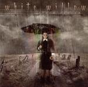

| Artist: | White Willow |
| Title: | Storm Season |
| Label: | Laser s Edge LE 1038 |
| Length(s): | 43 minutes |
| Year(s) of release: | 2004 |
| Month of review: | [06/2005] |
| 1) | Chemical Sunset | 7.58 |
| 2) | Sally Left | 6.33 |
| 3) | Endless Science | 3.36 |
| 4) | Soulburn | 9.21 |
| 5) | Insomnia | 5.49 |
| 6) | Storm Season | 4.21 |
| 7) | Nightside Of Eden | 9.44 |
Sally Left has mellotron and cello, and a slow sinister vocal line. There is something of Portishead in the vocal delivery, but for the rest this a progressive rock diamond, with rhythmic guitars below some Gilmouresque, more melodic and wailing guitar lines. Sometimes the music has the feel of Hammill's early solo albums. Endless Science is a rather friendly acousticy piece on which the cello and a sunny vocal melody dominate.
Soulburn opens heavily, have we skipped over into an Opeth album? The opening vocals are for Finn Coren, he sings in a low key style, almost whispering. Soon Coren doubles with Erichsen, and yes, the music is then quite close to progmetal; think of Pain Of Salvation with Sharon den Adel singing backing. Piano and cello dominate the middle part. Halfway we are when the music picks up again, with grand sweeping gestures on guitar, while the piano simply hammers on. This is the kind of climax I am looking for in progressive rock. Then we proceed slowly to fade.
After all this heaviness we come to the relative quiet of Insomnia. Not that this song makes us relax. No, the spirit of Hammill and Discipline's Unfolded Like Staircase wanders around here, and the organ calls back to mind Van Der Graaf Generator. In fact, the song slowly goes from tentative to climactic with the necessary excursions on mellotron. Erichsen sometimes overreaches a bit here, her voice in the higher regions a bit too sharp for my tastes.
The title track harkens back to the opener, for its melody. There is a certain classicalness underneath, a gait. The melody is extremely memorable, and slow moving, almost choirlike, although Erichsen sings by her self. We close down with the longest song on the album, Nightside Of Eden. It opens hectically, with a Arabic tinged riff played on electric guitar. The atmosphere is one of a horror soundtrack, especially the piano. The guitars however set it firmly in rock. The phrasing is again in the vein of Portishead, until she steps up a bit in power. At these times, she comes off as a bit too sharp. After an organ solo, we come to an acoustic pacey part. Yes, variation is the bottom line, with some meandering on electric guitar, side by side with the acoustic. Halfway the music drops out, to return with guitars in the style of the opening, followed by the Portisheadish vocals. This second part is similar to the first half, except maybe for the piano interlude.